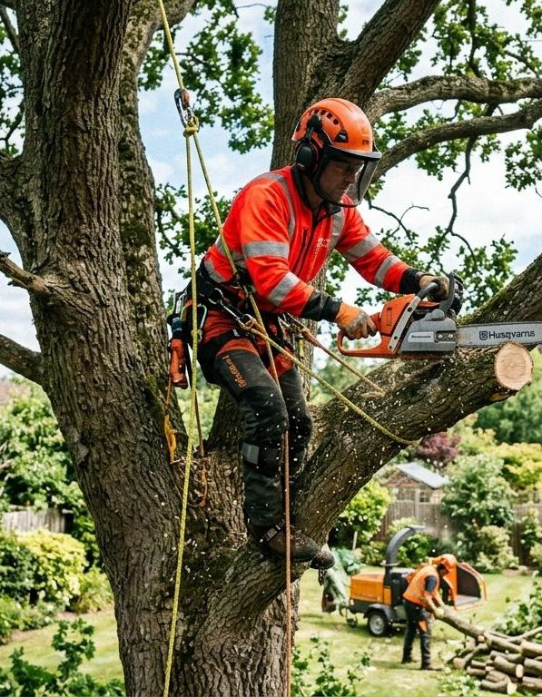
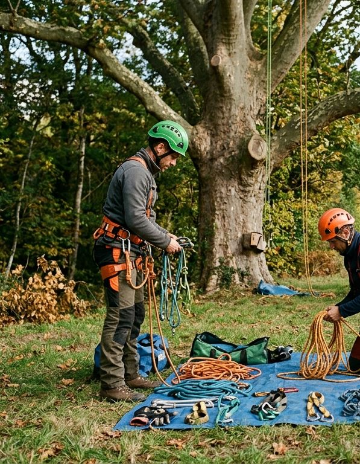
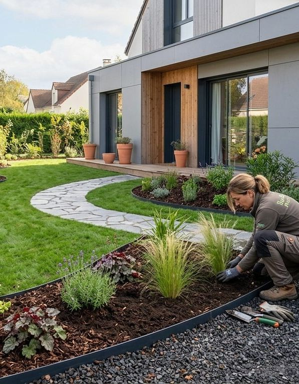
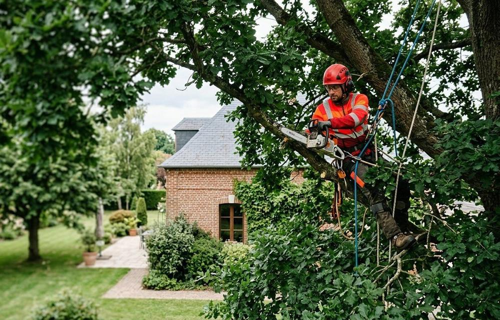
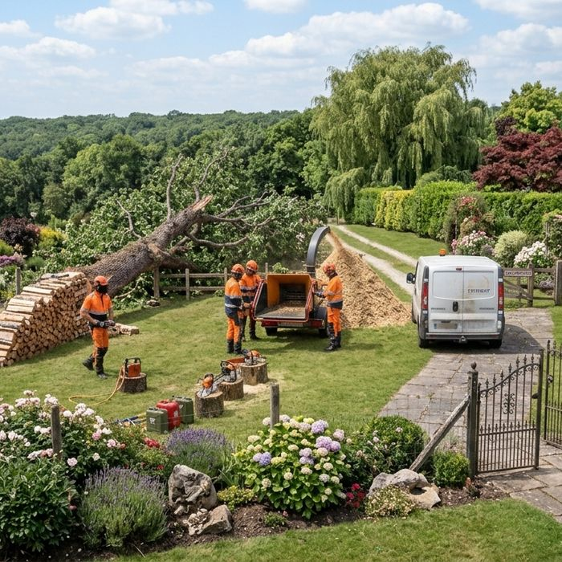

Entreprise d'élagage · Viry-Châtillon (91)
L'arbre au cœur de notre métier
Élagage, abattage, création et entretien d'espaces verts à Viry-Châtillon et dans un rayon de 20 km autour de Savigny-sur-Orge.



Nos prestations
Des arbres aux espaces verts, une seule équipe.
Quatre domaines d'intervention pour les particuliers, les copropriétés et leurs espaces extérieurs.

Élagage
Taille et entretien des arbres, y compris les plus grands : l'arbre est au cœur du métier de l'entreprise.
En savoir plus →Abattage
Abattage d'arbres, même en terrain difficile ou dangereux, pour sécuriser vos espaces extérieurs.
En savoir plus →Création d'espaces verts
Transformer et embellir un extérieur, quelle que soit sa surface, avec une ambiance naturelle personnalisée.
En savoir plus →Entretien d'espaces verts
Un suivi régulier des jardins et des espaces verts, pour particuliers et copropriétés.
En savoir plus →À propos
Une entreprise de Viry-Châtillon, dirigée par Arnaud Bouille.
CALICE ESPACES VERTS intervient à Viry-Châtillon (91) et dans les communes alentour, dans un rayon de 20 km autour de Savigny-sur-Orge. L'entreprise est spécialisée dans les travaux paysagers, avec l'arbre au cœur de son métier.
Elle sécurise les extérieurs en retirant les végétaux fragiles ou gênants, puis les transforme et les embellit, quelle que soit leur surface. Ses clients sont des particuliers et des copropriétés.
Arnaud Bouille, dirigeant

Ce que disent nos clients
Une intervention qui laisse un jardin net.
Les avis laissés par des clients de l'entreprise reviennent sur quatre points.
- 1
Des conseils
Le chantier est précédé de conseils, relevés par plusieurs clients.
- 2
Un travail rapide et soigné
Des interventions décrites comme rapides, fiables et soignées.
- 3
Un chantier nettoyé
Le nettoyage du jardin et du toit après l'intervention est salué.
- 4
Un suivi dans la durée
Certains clients font appel à l'entreprise depuis plusieurs années.
Contact
Un arbre à élaguer, un jardin à créer ?
Décrivez votre projet à l'entreprise : appelez ou écrivez, nous vous répondons.